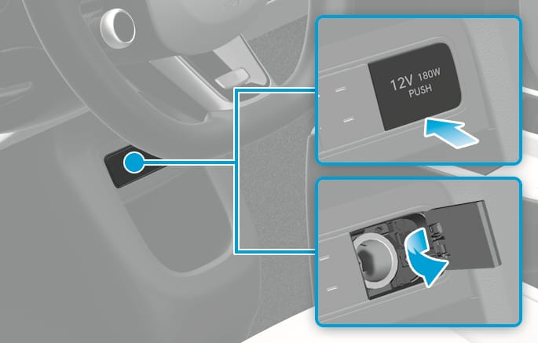
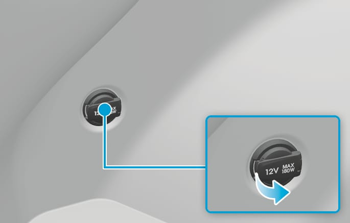

다용도 소켓

2C_PowerOutlet

2C_PowerOutlet_2
시동이 켜져 있을 때 다용도 소켓 커버를 눌러서 열고 전기 제품을 연결해 사용하십시오.
-
진공 청소기, 소형 냉장고, AV 기기, 게임기 등, 소비전력 180 W 이하의 12 V 전기 제품을 연결해 사용할 수 있습니다.
-
시동이 켜진 상태에서 다용도 소켓을 사용하십시오. 시동 'ACC' 또는 'ON' 상태에서 사용하면 배터리가 방전될 수 있습니다.
-
다용도 소켓을 사용한 후에는 전기 플러그를 소켓에서 분리하십시오. 전기 제품을 장시간 연결해 두는 경우 배터리가 방전될 수 있습니다.
-
배터리 방전을 방지하려면 다용도 소켓을 사용할 때 가급적 히터나 에어컨을 사용하지 말고, 반드시 필요한 경우 1단으로 조절하십시오.
-
이물질 유입으로 인한 고장을 방지하려면, 사용하지 않을 때는 소켓 커버를 닫으십시오.
-
전자파 간섭을 일으키는 일부 장치를다용도 소켓에 연결하는 경우, 오디오 잡음이 발생하거나 차량의 전자 장치가 정상적으로 작동하지 않을 수 있으므로 주의하십시오.
-
소비전력 180 W 이하의 12 V 전기 제품만 사용하십시오. 지정 용량을 초과하는 전기 제품을 연결하면 다용도 소켓 및 차량 배선이 과열되어 차량의 전기 장치가 손상될 수 있습니다.
-
전기 제품의 전원 플러그가 다용도 소켓에 완전하게 결합되었는지 확인하십시오. 전원 플러그가 완전하게 결합되지 않은 경우 접촉 불량으로 인해 차량의 전기 장치가 손상될 수 있습니다.
-
배터리 내장형 전기 제품을 연결하기 전 역전류 방지 기능이 있는지 확인하십시오. 역전류 방지 기능이 없는 제품을 연결하는 경우, 전류가 차량 내부로 역류해 차량의 전기 장치나 전자 장치가 오작동할 수 있습니다.
다용도 소켓에 손가락 등 신체 일부나 전기가 통하는 물체를 끼우지 마십시오. 감전 및 화재가 발생할 수 있습니다.